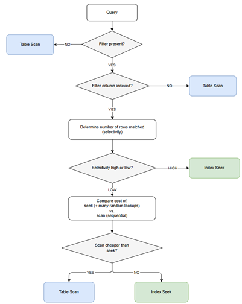
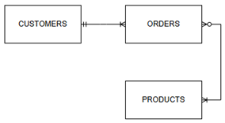
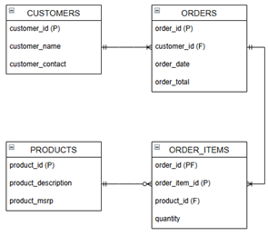
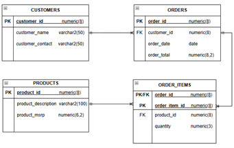

Welcome
Learning SQL and understanding how databases really work becomes much easier when concepts are explained clearly and in the right order. This section is where I share short, practical insights on SQL, databases, and data modeling — the same principles I use when tutoring students one-on-one.
Each tip focuses on one idea at a time. Some are beginner-friendly fundamentals, others explore intermediate techniques, and some dive into advanced reasoning used in real-world systems. The goal is always the same: to help you build clarity, structure, and confidence in how you think about data.
Here are a few example topics you’ll find here:
- Why
SELECT *hurts performance more than you think - INNER vs LEFT JOIN — when each one makes sense
- How to translate real-world rules into tables
- Why normalization reduces anomalies in your data
- Choosing between natural and surrogate keys
New tips are added regularly. Check back often as you continue building your SQL, database, and data modeling skills.
SQL Tip #1: Why SELECT * Hurts Performance More Than You Think
Ever wonder why a query feels slow even when the table isn’t that big? A common culprit is SELECT *. It looks harmless, but it quietly creates several performance problems.
What’s really happening when you use SELECT *:
- You return every column from every table in the query — even ones you don’t need.
- More data means more I/O, more memory use, and more work for the database engine.
- Wide datatypes (JSON, XML, VARCHAR(MAX), BLOB) make the slowdown even worse.
- The optimizer may be unable to use covering indexes, forcing extra lookups.
A simple rule of thumb:
Only select the columns you actually need.
Quick example:
Instead of:
SELECT * FROM Orders
Try:
SELECT OrderID, OrderDate, TotalAmount FROM Orders
SQL Tip #2: The Hidden Effects of Using ORDER BY in Views
Ever added an ORDER BY inside a view and expected the results to always come out sorted?
It feels intuitive… but most DBMS don’t treat views that way. Relying on ORDER BY inside a view can lead to inconsistent results and assumptions that quietly break as your data or execution plans change.
The real issue
A view is a logical query, not a stored, pre-sorted dataset. Nothing inside a view is physically materialized, so there’s no ordering to preserve.
When you query a view, the DBMS expands its definition like a subquery and then optimizes the entire statement as one unit. During this rewrite, the optimizer may:
- remove the
ORDER BY - reorder joins
- push filters down
- merge the view into the outer query
If the ORDER BY inside the view doesn’t affect the logical result, the optimizer is free to ignore it. The logical result is the set of rows returned — not the order in which they appear. Since the ORDER BY inside the view has no effect on which rows are included, it doesn’t influence the logical outcome. As a result, the optimizer can safely drop it during query processing.
So why does it look like ORDER BY in a view works?
Because sometimes the optimizer chooses a plan that happens to return rows in the order you expect — usually due to:
- an index that matches the view’s
ORDER BY - a clustered key aligned with the sort
- a plan that doesn’t need to reorder rows
- small data volumes that don’t trigger alternative strategies
This creates the illusion that the view is enforcing the sort. But the moment the optimizer chooses a different plan, the order changes. It wasn’t guaranteed — it was coincidence.
A simple rule of thumb
Treat a view like a subquery — use it to shape the data, and let the outer query handle the sorting.
Quick example
You create a view with an ORDER BY, then run:
SELECT * FROM vwStudents;
Even if the view sorts by Name, this query is not guaranteed to return sorted results.
To ensure sorted output from a view, code your logic as:
SELECT *
FROM (SELECT * FROM vwStudents) AS x
ORDER BY x.Name;
This works — but not because the view had an ORDER BY. It works because the outer query controls the final ordering.
Final thought
If your results seem to “randomly” change order when querying a view, the root cause is often a misplaced assumption that the view’s ORDER BY is being enforced. Keep sorting in the outer query where it belongs.
SQL Tip #3: JOIN vs WHERE — What Goes Where, and Why It Matters
SQL won’t stop you from misusing ON and WHERE — it’ll just give you unpredictable results when you least expect them.
When writing joins, it’s easy to mix up what belongs in the ON clause and what belongs in the WHERE clause.
A simple rule keeps everything clean:
ON vs WHERE — The Core Idea
- (join) ON: defines how tables relate (PK/FK)
- WHERE: defines which rows survive after the join
Think of it this way:
- ON = relationship logic
- WHERE = filtering logic
This mental model prevents subtle bugs — especially with outer joins.
INNER JOIN: Filter in ON vs Filter in WHERE
For INNER JOINs, these two patterns behave the same:
Filter inside the JOIN
JOIN Orders o ON c.CustomerID = o.CustomerID
AND c.City = o.CityFilter inside the WHERE
JOIN Orders o ON c.CustomerID = o.CustomerID
WHERE c.City = o.CityBoth return the same rows (NULLs aside) because INNER JOIN only keeps rows that satisfy both conditions. This is why INNER JOIN isn’t ideal for showing the ON vs WHERE difference.
LEFT/RIGHT/FULL JOIN: Where the Difference Actually Matters
Outer joins preserve unmatched rows — and that’s where ON vs WHERE diverge.
LEFT JOIN + AND (Filtering affects row matching)
LEFT JOIN Orders o ON c.CustomerID = o.CustomerID
AND c.City = o.City- The ON clause defines the row-matching rule
- If the city comparison fails (including NULL), the row simply doesn’t match
- But because it’s a LEFT JOIN, the left row still returns with NULLs on the right
This preserves the core LEFT JOIN behavior: return all rows from the left table.
LEFT JOIN + WHERE (Filtering affects row survival)
LEFT JOIN Orders o ON c.CustomerID = o.CustomerID
WHERE c.City = o.City- The LEFT JOIN first returns matched + unmatched rows
- The WHERE clause filters afterward
- Unmatched rows fail the comparison and are removed
This effectively turns the LEFT JOIN into an INNER JOIN.
Closing Thought
Use ON to describe how tables connect.
Use WHERE to filter the final result set.
For INNER JOINs, both approaches look the same.
For LEFT, RIGHT, and FULL OUTER JOINs, they behave very differently — and understanding that distinction is essential for predictable SQL.
One Last Best Practice
Avoid using WHERE to join tables.
Always join using JOIN … ON — it keeps your intent clear and your outer joins behaving as expected.
Database Tip #1: Why Choosing the Right Data Types Matters
This is a classic example of why datatypes matter more than most people think.
Oversized or inconsistent data types often cause unnecessary storage and slower reads.
What goes wrong when using the wrong data type:
- Poor integrity: Storing dates as VARCHAR allows inconsistent formats like 1/10/2025, 2025/10/1, or January 10, 2025.
- Invalid values: A column meant for ages defined as VARCHAR could accept values like ‘twenty’, ‘20’ or ‘999’.
- Slower queries: Comparing '123' (stored as text) to a number forces the database to convert types, possibly blocking index use.
- Inefficient sorting: Sorting '10', '2', '100' as strings gives incorrect order compared to numeric sorting.
- Wasted storage: Using
CHAR(50)for a 2-digit code inflates row size and reduces page density; use VARCHAR instead. - Weaker validation: A VARCHAR column meant for prices can’t prevent entries like ‘free’ or ‘ten dollars’.
When using the wrong data length:
For example, storing a person’s age as NUMBER(2) is sufficient. However, specifying a length of 5 instead can lead to:
- Extra storage for a wider numeric definition.
- Larger index entries, which can slow index scans and lookups.
- Reduced block/page density because fewer rows fit into each data block.
- More work for the engine to handle higher precision numeric type than needed.
- Increased memory and cache usage when moving and comparing the wider value.
Two simple rules of thumb:
- Match the data type to the nature of the data. For example: CHAR/VARCHAR for alphanumeric text.
- Specify a maximum length that makes sense. For example, using NUMBER(10) for a person’s age is excessive.
INT/NUMBER/DECIMAL, etc. for numeric values.
DATE/DATETIME for dates and timestamps.
Age will never exceed three digits (and realistically, two).
Database Tip #2 — How the Optimizer Uses Indexes
Understanding why a database optimizer chooses an index seek in some cases and a full scan in others is one of the most important mental models in query tuning. Yet it’s also one of the most misunderstood. Many people assume seeks are always “good” and scans are always “bad,” but the optimizer is far more strategic than that.
At the heart of every access-path decision is a single idea: how much of the table the query is expected to touch. Once you understand that, the optimizer’s behavior becomes predictable — and tuning becomes easier.
Here, I break down the seek-vs-scan decision flow in a clear, visual way so you can see exactly how the optimizer thinks.
When a query includes a filter, the optimizer must choose the most efficient way to retrieve the required rows. That choice almost always comes down to two access paths:
- Use an index seek to jump directly to matching rows, or
- Perform a table or index scan to read pages sequentially.
The optimizer makes this decision using a simple but powerful concept: selectivity — how many rows the filter is expected to return.
To understand how this works, here’s a clear, step-by-step decision flow that mirrors the optimizer’s logic.
Optimizer Decision Flow: Seek or Scan?
Note: This diagram shows the optimizer’s behavior when evaluating a single filter condition. With multiple predicates, the optimizer considers each indexed column, their combined selectivity, and whether composite indexes exist.
Understanding Selectivity
Selectivity determines whether the index is helpful:
- High selectivity: the filter returns a small percentage of the table
- Low selectivity: the filter returns a large percentage of the table
And importantly… if the query has no filter at all, the optimizer must read the entire table — which always results in a scan, regardless of the table’s size.
- On small tables, this is fast.
- On large tables, it can be expensive — but still cheaper than using an index when all rows are needed.
Why Scans Aren’t Always “Bad”
A scan simply means: “Read all data pages sequentially in storage order.”
Sequential I/O is extremely efficient as the DBMS reads large amounts of data with minimal overhead, which is why scans can outperform seeks when many rows are needed.
And here’s the key nuance: whether a scan is “fast” or “slow” is relative to the size of the table.
- On small tables, scanning every page is often faster than seeking into an index.
- On large tables, a scan can be expensive — but still cheaper than performing thousands or millions of random lookups when many rows are needed.
Indexes help only when they allow the optimizer to avoid reading non-qualifying data. If most of the table must be read anyway, the index provides no benefit.
Takeaway
Indexes improve performance by reducing the amount of data the DBMS must read.
If the filter is highly selective, a seek is efficient. If the filter returns many rows — or there’s no filter at all — a scan becomes the cheapest option.
Data Modeling Tip #1: Conceptual, Logical, and Physical Models
A solid database doesn't begin with tables — it begins with understanding the business. Data modeling gives you a structured path from idea to schema, moving through three layers:
- Conceptual
- Logical
- Physical
Each layer answers a different question — what the business needs, how the data fits together, and how it will be implemented; adding more detail and precision at each step.
Data modeling isn't just documentation — it's how you prevent rework, miscommunication, and inconsistent data structures. When these layers are skipped or blurred, teams end up with mismatched assumptions, duplicated data, and systems that are hard to maintain.
Conceptual Model — The Business View
This is the highest-level model. It captures what the business cares about, without technical detail.
A conceptual model is like a city map that shows neighborhoods but not street names — it gives orientation without overwhelming detail.
Focus:
- Major entities (Customer, Order, Product)
- High-level relationships (Customers place Orders)
- No attributes, no keys, no data types
Purpose:
Align business stakeholders on the core “things” the system must track.
Once the business concepts are clear, we can proceed to the logica lmodel to add structure...
Logical Model — The Structural Blueprint
This is where the model becomes detailed and structured, but still independent of any specific database platform.
Focus:
- Entities and their attributes
- Primary keys and candidate keys
- Relationship cardinalities (1:1, 1-M, M:N)
- Normalization and business rules
Normalization ensures each fact is stored once, in the right place, reducing redundancy and improving data integrity. The logical model is where these rules take shape.
Purpose:
Define how the data fits together logically.
Where entities and attributes fit:
- Entities remain entities
- Attributes are now fully defined
- Still no tables or columns — this is platform-agnostic
- Keys and relationships are introduced to define identity and structure
At the logical stage, nothing is tied to Oracle, SQL Server, PostgreSQL, MySQL, or any specific DBMS. It’s the “what” and “how,” not the “where.”
With the logical rules defined, we can now translate the design into a real database in the physicala model...
Physical Model — The Database Implementation
This is the model that becomes the actual database schema.
Focus:
- Tables and columns
- Data types
- Indexes, constraints, foreign keys
- Naming conventions (e.g.,
customer_id,order_id) - Platform-specific considerations (SQL Server, PostgreSQL, MySQL, etc.)
Purpose:
Translate the logical design into a working, optimized database.
Where entities and attributes fit:
- Entities become tables
- Attributes become columns
- Relationships become foreign keys
- Keys become PK/FK constraints and indexes
This is the stage where the abstract becomes concrete.
The physical model introduces performance considerations: indexing strategies, storage formats, partitioning, and naming conventions that support long-term maintainability.
Example Across All Three Layers
Conceptual:
Entities and relationships only.
Logical:
Entities, attributes, relationships, keys.
Physical:
Tables, columns, relationships, keys, datatypes.
Final Thoughts
Conceptual models define the things.
Logical models define the details.
Physical models define the implementation.
Entities become tables.
Attributes become columns.
Get that flow right, and your data model becomes clear, scalable, and easy to maintain.
Quick Disclaimer
It's common to hear people refer to entities as “tables” and attributes as “columns” even when discussing conceptual or logical models. It’s everyday shorthand — just be aware of which layer you’re actually working in.